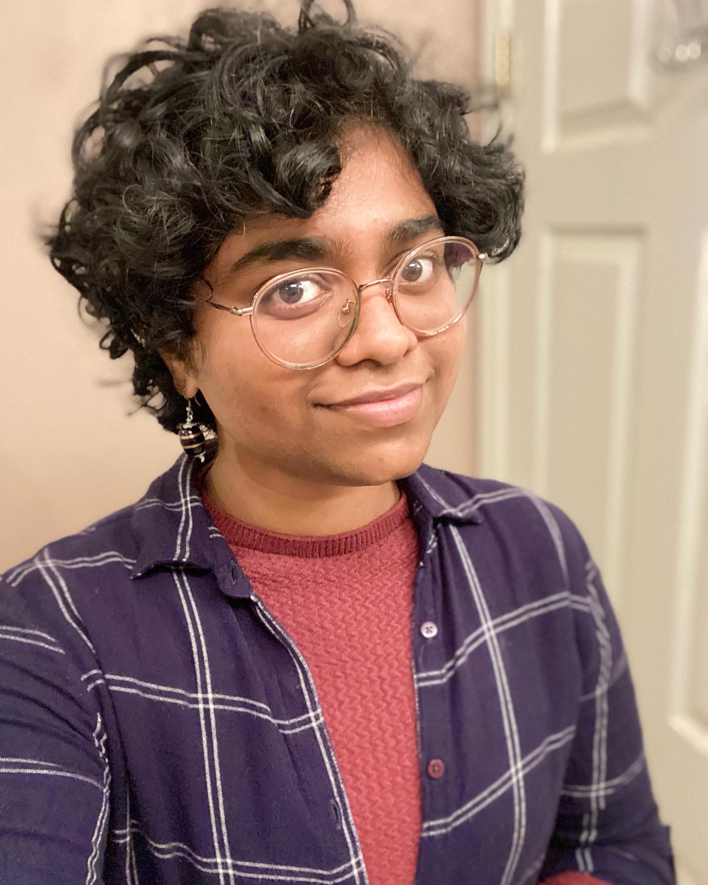

About Me
Swetha S. was born and raised in Coimbatore, India.
She derives her love for nature from her summers at Kanyakumari, a coastal town with buzzing beaches and nonchalant lotus ponds, and the three years she spent in the hilly town of Semenyih where she earned her B.A. in English with Creative Writing from the University of Nottingham Malaysia.
She is currently pursuing an MFA in Creative Writing at the University of Miami, Florida.
When she is not reading or writing, she can be found playing Stardew Valley, hoarding more packets of tea, and perfecting her cold brew.

Book
Goldspun

Every story started with a prayer to the gods—except mine. In fact, a peasant’s story wasn’t written at all.
But I was going to change that.
When the Golden Kurinji flowers filled the fields at the foot of the mountains, a peasant girl’s father brought her a petal and told her how the flower had the power to make one a scholar. But that was years ago, and the girl with no name is tired of hiding outside her town’s school and peeking into its compounds to learn what she needed to be worthy of the flower. Being born a peasant, she is not allowed to read or write, let alone touch the flower. But everything changes when she meets Aavirai, a scholar entrusted with gifting the Golden Kurinji to the crown princess.
Aavirai is angry at the royal family for destroying forests and livelihoods in their selfish conquest. She is angry at her mother, the commander, for folding to the queen’s every whim. In defiance, she gives the last Golden Kurinji meant for the royal princess to a peasant girl she’d met days ago. Now the royal family is out for blood and have sent her own mother in pursuit. The duo must embark on an adventure across the kingdom to complete an impossible task that will secure the scholars’ support, or lose their lives and everything they’ve fought for.
Fiction
Chock full of speculative elements and mommy issues.
- unchartered territories It Gets Even Better: Stories of Queer Possibility
- The Moon Particle Magazine
- My Old Hometown Out of Print magazine
Poetry
Queer, feminist, and meant to be screamed into a void.
- Parambarai Dust Poetry magazine
- Voices Variety Pack literary magazine
Résumé
Work Experience
Graduate Teaching Assistant – University of Miami (2022 – Present)
- Tutored students at the Writing Center.
- Ran workshops and lead discussions in a 209 Creative Writing class.
- Read writing—essays, fiction, poetry, and non-fiction—and provided feedback.
- Planned and organized lessons keeping time constraints in mind.
- Researched and developed readings, handouts, and prompts.
Freelance Editor – Tessera Editorial (2020 – 2022)
- Worked as a copyeditor, developmental editor, sensitivity reader, and proofreader.
- Managed, communicated, and billed clients.
- Worked with Macmillan, small press publishers, and independent authors.
- Communicated with authors to explain issues and answer questions.
Designer – TEDxUoNMalaysia – University of Nottingham (Oct 2019 – Feb 2020)
- Worked with marketing and social media teams, and developed templates based on theme.
- Designed merchandise, promotional posters, and tickets using Adobe Photoshop and Illustrator.
- Assisted in backstage operations.
Education
Master of Fine Arts in Creative Writing, Fiction
University of Miami (2022 – Present)
Bachelor of Arts in English with Creative Writing
University of Nottingham (2018 – 2021)
Skills
- Copyediting, proofreading, developmental editing
- Chicago Manual of Style
- HTML, CSS
- Photoshop, Illustrator
- Microsoft Office
Awards
- Dean's Summer MFA Fellowship 2023 - University of Miami
- Vice Chancellor's Medal 2021 - University of Nottingham
- Dean's Excellence Scholarship 2020 - University of Nottingham